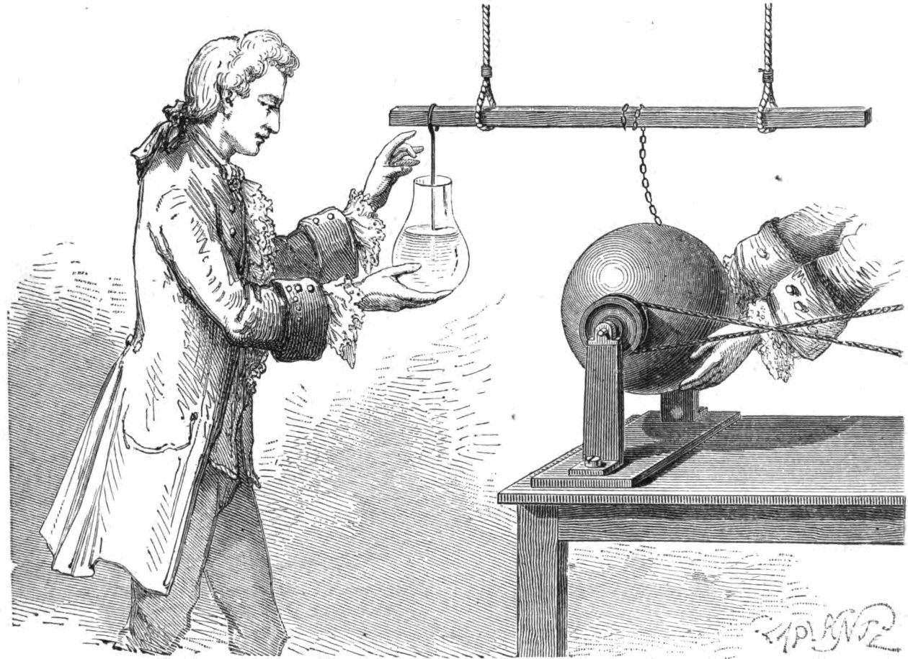
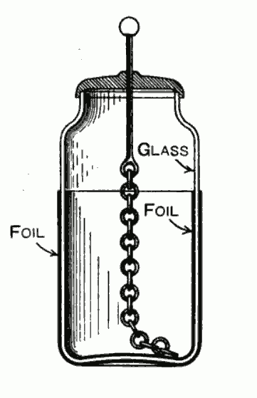
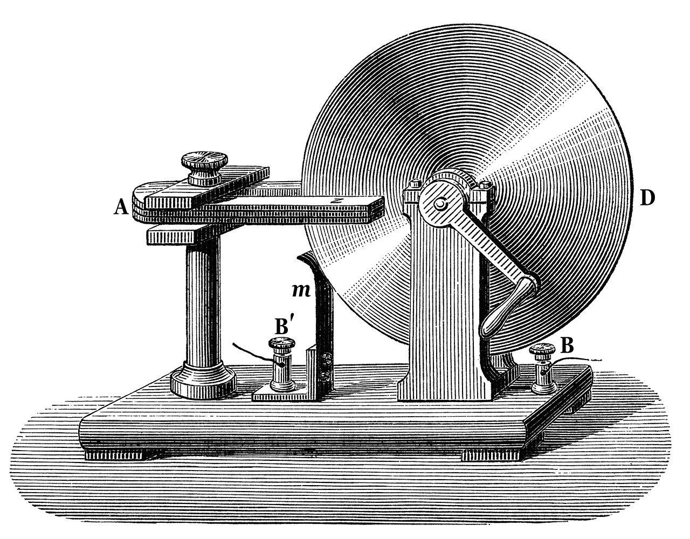
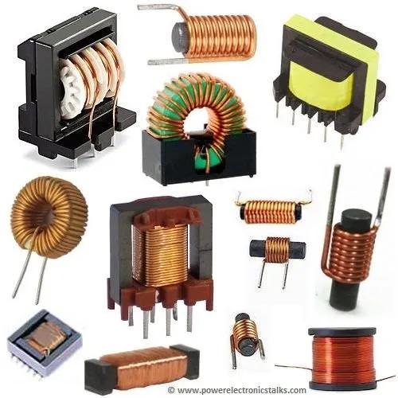
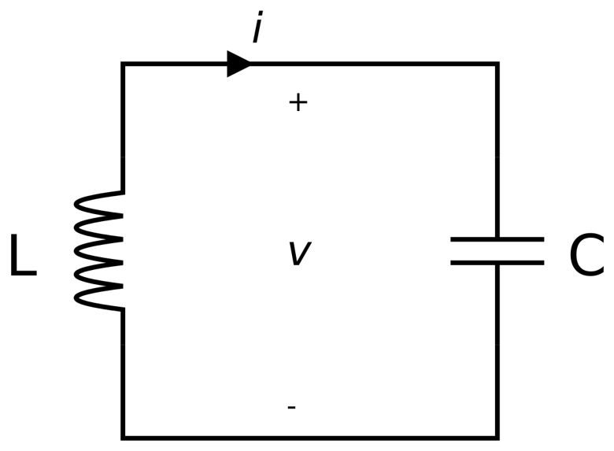
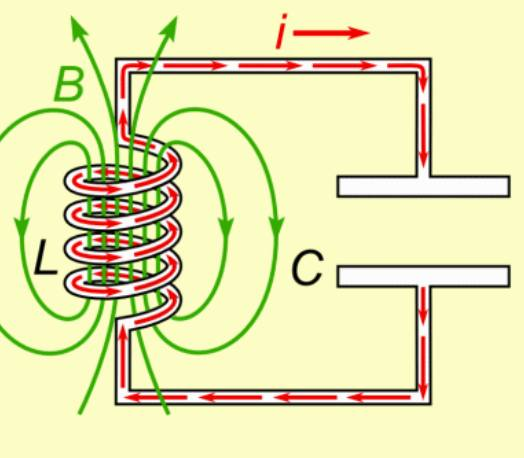
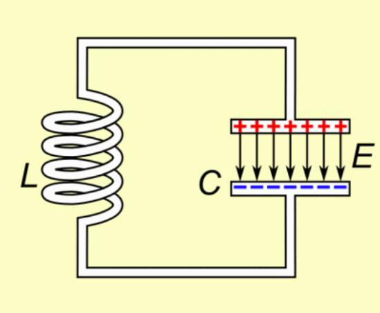
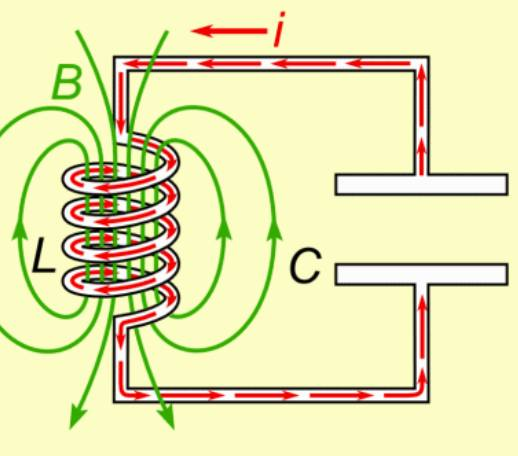
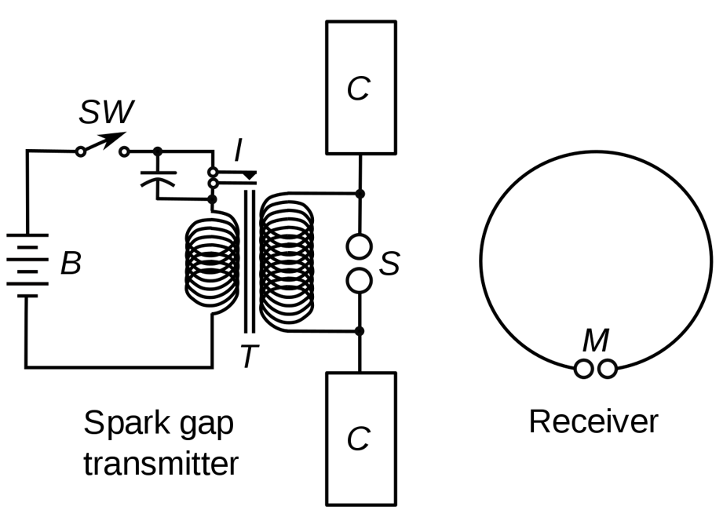
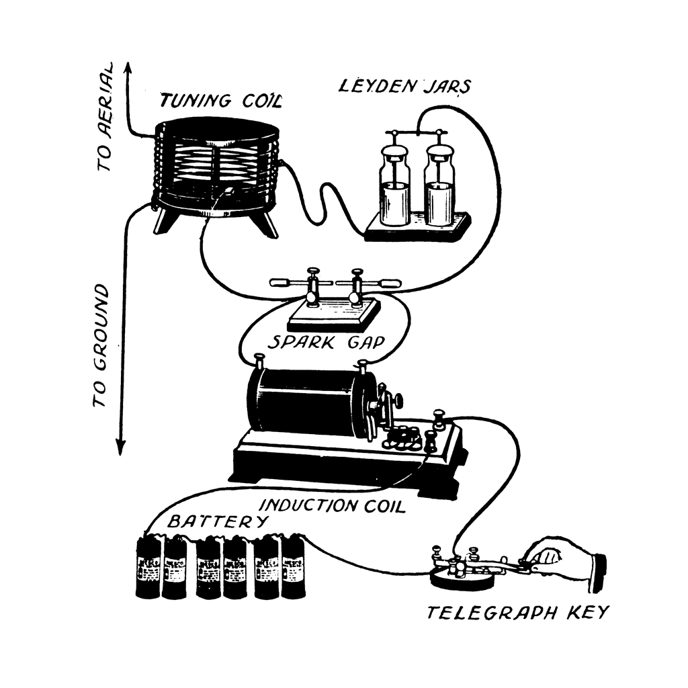

레이더 개발 이야기 (14) - 19세기에는 파동을 어떻게 만들었을까
게시: 2022-12-29T06:30:46+09:00
<바보야, 중요한 건 손이야!> WW2 중 제대로 된 공대공 레이더를 개발하려던 영국 공군의 치열한 노력은 결국 cavity magnetron이라는 소자를 만들어 내면서 결실을 맺음. 이 캐버티 마그네트론 덕분에 연합군은 전쟁 내내 훨씬 우수한 레이더로 독일과 일본을 제압. 캐버티 마그네트론 덕분에 연합군은 그야말로 칠흑 같은 암흑 속에서 자신만 야시경을 가진 것과 같은 우월함을 누렸음. 그런데 이 캐버티 마그네트론 없이도 영국은 물론 독일과 일본도 레이더를 만들어 잘 운용했었음. 캐버티 마그네트론 없이 어떻게 수십 MHz에 이르는 주파수를 만들어냈을까? 그 이야기까지 가려면 먼저 18세기 중반 독일 포메른 지방으로 가야함. Ewald Georg von Kleist라는 카톨릭 수사가 있었는데, 전기에 관심을 가지고 여러가지 실험을 하고 있었음. 이 사람은 당시 정전기 형태로만 얻을 수 있었던 전기라는 것의 정체는 어떤 미지의 유체라고 생각하고 그걸 병에 모을 생각함. 그런 실험은 이미 보저(Georg Matthias Bose) 등이 하고 있었고, 폰 클라이스트도 보저가 만든 것과 똑같은 회전 유리구에 마찰을 가하고 거기서 발생하는 정전기를 쇠사슬을 통해 알콜을 담은 유리병에 모으려고 시도. 보저가 만든 이 장치에서 보저는 알콜에 정전기 스파크로 불을 붙이는 화려한 데모를 보여주며 사람들의 이목을 끌었기 때문에 폰 클라이스도 그런 신기한 현상을 재현해보려고 했던 것. 폰 클라이스트는 이 실험을 하다 우연히 그 쇠사슬과 알콜 병을 연결하는 못에 손을 댔는데, 하필 그때 다른 손은 그 알콜 병을 들고 있었음. 이때 폰 클라이스트는 아마 수만 볼트에 달했을 정전기 전압에 노출되어 심한 전기 충격을 받음. 그는 자신의 실험이 대성공을 거두었다고 확신하고 동료 실험가들에게 자랑하는 편지를 씀.

(이건 폰 클라이스트가 아니라, 네덜란드 라이덴에서 무쉔브뢱의 조수 퀴네우스가 폰 클라이스트처럼 우연히 손에 병을 든 채 병에 연결된 사슬을 만지는 장면)
이 실험의 본질은 capacitor, 즉 콘덴서의 발명. 가깝게 위치한 도체 사이에 절연체를 끼우면 절연체를 사이에 둔 도체에 전하가 쌓여 전기장 형태로 에너지가 저장되는 것. 여기서 절연체는 유리이고 두 도체는 알콜이 든 물과 바로 폰 클라이스트의 손. 그러니까 병을 손에 쥔 것이 핵심. 그러나 동료들이 똑같은 실험을 열심히 해봤으나 폰 클라이스트와 같은 경험을 하지는 못함. 몇 달 뒤에야 다른 실험가가 똑같은 결과를 얻었는데, 그 역시 손에 병을 든 채로 병 입구의 못을 만졌던 것. 왜 다른 실험자들은 동일한 경험을 하지 못했을까? 폰 클라이스트가 편지에 '이 병을 손에 쥔 채 했더니 방 저 편으로 나가 떨어질 정도로 엄청난 전기 충격을 받았다"라고 했기 때문에 다들 손에 들고 하길 꺼렸던 것. 심지어 폰 클라이스트 자신도 자신의 손이 어떤 역할을 했는지 이해를 못했고 다시 그 현상을 재현하는데 애를 먹음. 나중에야 그의 제자들이 "선생님, 중요한 건 손이었습니다..."라고 깨달음. 그리고 병 안팎에 얇은 금속판을 붙여서 제대로 된 커패시터를 만듬.

(인류 최초의 커패시터 라이덴 병)
동일한 실험이 네덜란드 라이덴(Leiden) 시의 Pieter van Musschenbroek에 의해 거의 동시에 독자적으로 수행되었고, 이것이 더 유명해져서 이 병은 라이덴 병(Leiden jar)이 됨.
<못 배운 자들의 승리> 수십 MHz의 주파수를 만들기 위해서는 폰 클라이스트의 뻘짓이 커패시터를 만들어낸 것처럼, 또 다른 장치가 만들어져야 했는데 그 장치는 80년이 훨씬 지난 뒤에야 영국에서 만들어짐. 그런데 폰 클라이스트와 마찬가지로 수학에 기초한 이론적인 교육을 못 받은 실험 물리학자가 그걸 만들어 냄. 바로 마이클 패러데이. 런던의 가난한 대장장이 견습생의 아들로 태어난 패러데이는 자신도 서점의 견습생으로 일했고 정규 교육은 받지 못했으나, 오로지 자습을 통해 물리학과 화학 분야에서 뛰어난 업적을 세운 과학자가 됨. 패러데이는 1831년 구리선을 감은 코일 2개를 근접시킨 상태에서 한쪽 코일에 전류를 가하면, 떨어져 있는 다른 코일에도 전류가 순간적으로 흐른다는 것을 실험을 통해 발견 (그림1).

(맨 오른쪽의 원통은 배터리. 작은 직경의 코일 A를 큰 직경의 코일 B 속으로 재빨리 집어 넣으면, 자기장의 변화로 인해 코일 B에 유도 전류가 발생하고, 그 전류를 G의 전류계에서 탐지.)
이건 1번 코일에 전류가 흐를 때 자기장이 발생하고, 그 자기장 변화의 영향을 받은 2번 코일이 전자기 유도 현상을 일으켜 전류를 만들어낸 것. 이 위대한 발견을 통해 패러데이는 최초의 직류 발전기도 만들어 냄.

(패러데이의 직류 발전기. A는 말굽 자석. B는 고정못인데, 거기에 연결된 전선이 B'로 연결되어 있음. B'의 고정못은 구리 원반 D와 닿아있는 접촉자로부터 전류를 받아옴.)
그러나 당시 물리학자들은 이 발견을 대체로 무시. 이유는 수학 교육을 못 받은 패러데이가 자신의 발견을 수학적으로 표현해내지 못했기 때문. 그러나 그의 발견은 약 30년 뒤 '뉴튼 이후 가장 위대한 물리학자'라고 칭송받는 James Clerk Maxwell이 훌륭하게 수학으로 표시해내면서 더욱 크게 빛남. 그나저나 패러데이가 만든 이 장치는 결국 최초의 인덕터(inductor, 아래 그림)가 됨. 그리고 이것이 커패시터와 연결되면서 인간은 일초에 수만번 진동하는 파동을 만들 수 있게 됨.

<타이타닉에서 SOS를 보낸 무전기>
LC 회로(아래 그림1)라는 것은 공명회로(resonant circuit, tank circuit, tuned circuit)로서, L (inductor, 전자기 유도 코일)과 C (capacitor, 콘덴서)가 연결된 단순 회로.

이론상, 전하가 쌓인 콘덴서가 이 회로에 연결되면 전압차에 의해 회로에 전류가 흐르는데, 그 전류 변화에 의해 인턱터에 자기장이 발생. 콘덴서에 쌓인 전류는 순식간에 방전되어 전류 흐름은 중단되는데, 이때 자기장 형태로 저장되었던 에너지는 전자기 유도에 의해 원래 전류와는 역방향인 전류를 만듬. 이 전류가 다시 콘덴서에 전하를 쌓는데, 이는 원래와는 정반대의 전압을 만들어냄. 그리고 인덕터의 자기장이 사라지면서 다시 처음처럼 콘덴서에 쌓였던 전하가 전류가 되어 반대 방향으로 흐름 (아래 그림 2~4).
  
이는 회로 안에서 정반대 방향으로 이리 갔다 저리 갔다 하는 전자의 흐름, 즉 파동. 그 주파수는 인덕터와 커패시터의 특성에 따라 1초에 수천번에서 수십억 번. 전기공학자들은 이 LC 회로 혹은 여기에 저항(R)을 붙여 LRC 회로를 통해 다양한 신호를 발생시킴. 하인리히 헤르츠 교수가 인류 최초로 전파를 만든 spark-gap transmitter도 바로 이런 LC 회로를 이용한 것 (그림5).

(T가 인덕션 코일. S는 spark가 일어나는 간극. C는 커패시터 효과를 더 크게 만들기 위한 금속판.)
아래 그림 6는 1917년 아동 취미용 spark-gap transmitter의 다이어그램. 1912년 타이타닉 호가 침몰할 때 무선으로 SOS 신호를 보낸 것도 바로 이 spark-gap transmitter를 통한 것이었음.

** 원래 스파크-갭 송신기는 잡음이 많은데다 대역폭이 쓸데없이 너무 넓어서 여러 주파수에서 간섭을 일으키는 단점이 있었음. 1920년대 들어 진공관을 이용한 회로가 나오면서 고물이 된 스파크-갭 송신기는 1934년 국제 무선통신 협회(International Radiotelegraph Convention)에 의해 세계적으로 금지됨. 단, 이미 그런 송신기가 설치된 낡은 배에서는 위급 상황시에는 쓸 수 있게 예외 조치를 두었는데, 어차피 SOS 신호는 위급 상황에서만 쓰는 것이므로 상당수의 선주들은 비싼 새 송신기 대신 스파크-갭 송신기를 계속 유지했고, 결국 비상용 스파크-갭 송신기는 WW2 동안에도 사용됨.